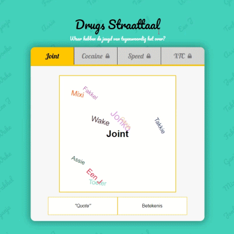
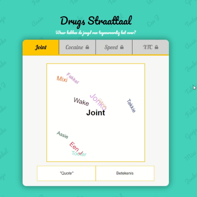
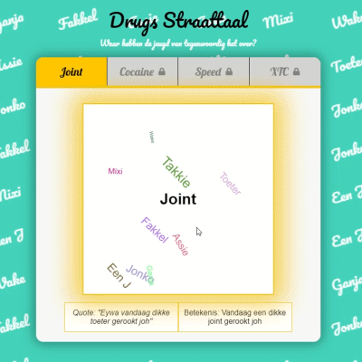

Het gebruik van drugs onder de jongeren is in de afgelopen jaren sterk toegenomen
Jongeren gebruiken ook steeds vaker synoniemen voor de drugs die ze gebruiken
Leer op een speelse wijze wat deze drugs gerelateerde termen betekenen!
Druk op Tutorial voor een uitleg hoe deze game werkt en ontdek wat jonko betekent!
De bedoeling van dit spel is om alle synoniemen te vinden in het vierkante scherm. Als je op een synoniem klikt krijg je een audio fragment te horen van het synoniem. De quote van het aangeklikte synoniem word linksonderaan weergeven en rechts staat de vertaling. Bij elke gevonden synoniem veranderd de achtergrond tekst van kleur.

Helemaal links heb je een indicator hoeveel je nog moet gaan vinden
Helemaal rechts heb je een button counter en een button. Deze button zorgt ervoor dat de orïentatie van de synoniemen worden veranderd, wanneer je het te moeilijk vind om een synoniem te vinden of aan te klikken. Boven deze button zie je een counter met hoe vaak je op de button heb geklikt.
Als alle synoniemen gevonden zijn dan word de volgende level unlocked!
Wolla G, kom een jonko klappen dan!